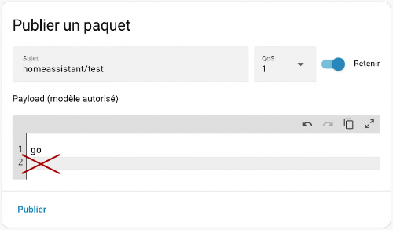
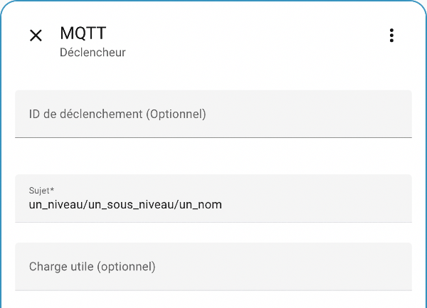

107. MQTT¶
107.1 Le protocole MQTT¶
MQTT (Message Queuing Telemetry Transport) est un protocole de communication machine à machine très léger basé sur TCP/IP.
Il permet de transférer des informations à l'aide d'un mécanisme publication/abonnement (publish/subscribe).
Dans le monde de la domotique, il a une application intéressante : il permet à deux boîtes domotiques de communiquer ensemble. Les données d'un capteur branché sur la boîte A pourraient ainsi déclencher une action sur un récepteur branché sur la boîte B.
Dans cette fiche :
- Agent MQTT
- Exemple de fonctionnement
- Les canaux de communication MQTT
- Payload
- QoS
- Retain
- Conditions pour qu'une communication MQTT ait lieu
Agent MQTT¶
Pour gérer les communications, il faut avoir un agent MQTT (en anglais, MQTT broker), parfois appelé courtier MQTT ou encore serveur MQTT.
Mosquitto est un agent MQTT libre et très répandu. C'est d'ailleurs lui qui peut être facilement installé par différentes boîtes domotiques comme Jeedom ou Home Assistant.
Il ne faut pas confondre l'agent Mosquitto avec le site Web https://test.mosquitto.org qui est une installation publique de ce même Mosquitto, souvent utilisée pour faire des tests.
Attention : les informations qui transigent sur https://test.mosquitto.org sont publiques! De plus, la communication n'est pas fiable, le serveur peut arrêter de fonctionner à tout moment. C'est un serveur de test.
Les informations qui transigent sur un agent local sont plus sécuritaires que celles qui transigent sur https://test.mosquitto.org, à condition que l'agent MQTT soit correctement configuré.
Exemple de fonctionnement¶
Voici un exemple simple du fonctionnement d'une communication MQTT :
- Une boîte domotique envoie de l'information au sujet d'un de ses objets connectés, par exemple un capteur de luminosité, à un agent MQTT sur un canal donné. Le système domotique est ici le client publieur (publisher).
- Une autre boîte domotique est abonnée à ce canal. Elle recevra alors l'information sur la luminosité. Une règle d'automatisation lui permettra d'allumer ou d'éteindre une ampoule selon l'information reçue. Cette boîte est le client abonné (subscriber).
- L'information peut circuler dans les deux sens, c'est-à-dire que la boîte de l'ampoule, qui était le client abonné dans l'opération précédente, deviendra un client publieur si elle envoie de l'information au sujet de son état à l'agent MQTT sur un autre canal.
- Les abonnés de ce canal seront informés de l'état de l'ampoule et pourront réagir convenablement.
Ce mécanisme est intéressant puisqu'il peut fonctionner localement, sans devoir faire appel à un service infonuagique.

Les canaux de communication MQTT¶
La communication entre le publieur et un abonné passe par un canal. On utilise parfois le terme sujet. En anglais, on dira channel ou topic.
L'agent MQTT peut gérer autant de canaux que nécessaire.
Le publieur décide sur quel canal il publie l'information. L'agent enverra cette information seulement aux abonnés de ce canal. Ceci permet à plusieurs publieurs d'envoyer des informations qui ne seront reçues que par ceux qui désirent recevoir ces informations.
Pour qu'un canal existe, il suffit qu'un publieur et un abonné l'utilisent. Il n'y a pas d'étape de création en tant que telle.
Le nom d'un canal contient généralement plusieurs niveaux afin de bien organiser les canaux que l'agent MQTT doit gérer.
Le nom sera sous la forme : un_niveau/un_sous_niveau/un_nom.
Il sera écrit entièrement en lettre minuscules avec possiblement des barres de soulignement pour séparer les mots.
Il est préférable d'éviter les espaces, les caractères accentués et les caractères spéciaux dans le nom d'un canal.
Voici quelques exemples valables :
- maison/chambre/temperature
- securite/porte
- sauvegarde/homeassistant
- homeassistant/cafetiere
Caractères génériques¶
Si vous désirez écouter tout ce qui se publie sur un canal, peu importe les sous-niveaux, vous pouvez utiliser un #.
Par exemple, pour écouter tout ce qui se dit sur le canal jeedom, peu importe les sous-niveaux, vous écouterez le canal jeedom/#.
Pour écouter tout ce qui est publié sur un agent MQTT, vous écouterez le canal #.
Payload¶
Le payload, aussi appelé la charge utile ou simplement les données, est le corps de l'information publiée sur un canal.
En fait, un message publié via MQTT contient un canal et un payload. On peut faire une comparaison avec un courriel qui contient un titre et un message.
QoS¶
La qualité du service peut prendre les valeurs 0, 1 ou 2, la valeur 2 étant la meilleure garantie de livraison du message mais également la plus exigente au niveau des ressources.
Cette valeur peut être configurée du côté du client publieur et du côté du client abonné.
Lorsque le client abonné a une QoS inférieure à celle du client publieur, c'est la plus basse valeur qui est utilisée pour envoyer l'information de l'agent MQTT vers le client abonné.
https://www.hivemq.com/blog/mqtt-essentials-part-6-mqtt-quality-of-service-levels/
Retain¶
Cette option permet notamment aux nouveaux abonnés de recevoir immédiatement le dernier message retenu sur ce canal.
https://www.hivemq.com/blog/mqtt-essentials-part-8-retained-messages/
Conditions pour qu'une communication MQTT ait lieu¶
Pour qu'une communication MQTT ait lieu, il faut :
- un client publieur et un client abonné qui utilisent le même agent MQTT (si l'agent est local, le publieur et l'abonné devront être sur le même sous-réseau)
- un client publieur et un client abonné qui utilisent le même canal MQTT
Pour plus d'information¶
« MQTT ». Wikipédia. https://fr.wikipedia.org/wiki/MQTT
« MQTT Essentials ». HiveMQ. https://www.hivemq.com/mqtt-essentials/
« MQTT Tutorial for Arduino, ESP8266 and ESP32 ». DIYI0T. https://diyi0t.com/introduction-into-mqtt/
107.2 La sécurité avec MQTT¶
Le protocole MQTT peut être très sécuritaire s'il est bien utilisé. Dans le cas contraire, il peut ouvrir la porte à des attaques ou à une violation de la vie privée.
Voici quelques aspects à prendre en considération.
Agent MQTT utilisé¶
Les clients publieurs et les clients abonnés doivent passer par un agent MQTT pour que les informations transigent du publieur vers le ou les abonnés.
Cet agent peut être installé n'importe où : sur la machine du client publieur, sur la machine du client abonné, sur une machine tierce. Il est même possible d'utiliser un agent de test disponible à l'adresse https://test.mosquitto.org.
Attention si vous utilisez cet agent de test : les informations qui y transigent sont publiques! Il ne faut en aucun cas l'utiliser pour autre chose que des tests.
Visibilité de l'agent MQTT sur le réseau¶
Si l'agent MQTT est sur le même réseau que le client publieur et le client abonné et qu'ils sont protégés par un pare-feu, il n'y a pas de risque que les données qui transigent soient interceptées en dehors de ce réseau.
Vous pourriez vous croire en sécurité mais n'oubliez jamais que le pirate peut être une personne de l'intérieur, qui a accès à ce même réseau.
Dans le cas où un port est ouvert pour rendre l'agent disponible sur Internet, les risques d'interception sont encore plus importants.
Dans tous les cas, vous devez prendre les précautions mentionnées dans les sections qui suivent.
Mot de passe pour s'abonner à un canal¶
Lorsque vous configurez un agent MQTT, vous avez la possibilité de demander un identifiant et un mot de passe.
Ceci est particulièrement important dès que l'agent MQTT est mis en production. Mais pour que ce soit efficace, il faut également que la communication soit encryptée, d'où l'importance du point suivant.
Port utilisé par l'agent MQTT¶
Par défaut, un agent MQTT écoutera sur le port TCP/IP 1883. Il s'agit d'un port réservé par l'Internet Assigned Numbers Authority (IANA) pour MQTT.
Ce port n'est pas sécuritaire.
Il est préférable d'utiliser le port 8883. Il s'agit d'un autre port réservé par l'IANA pour MQTT mais cette fois, il exige une communication avec SSL/TLS. Vous aurez donc à installer un certificat TLS. Les clients devront utiliser ce certificat pour que les communications fonctionnent.
107.3 Client MQTT dans Home Assistant¶
Home Assistant peut effectuer des communications MQTT grâce à l'intégration MQTT.
Cette intégration installera un client MQTT avec la possibilité d'installer également un agent.
Rappel : pour qu'une communication MQTT ait lieu, il faut :
- un client publieur et un client abonné qui utilisent le même agent MQTT (si l'agent est local, le publieur et l'abonné devront être sur le même sous-réseau)
- un client publieur et un client abonné qui utilisent le même canal MQTT
Dans cette fiche :
- Installation du client MQTT
- Configuration du client MQTT (informations sur l'agent à utiliser)
- Agent test.mosquitto.org
- Agent installé localement
- Agent installé sur un second ordinateur
- Utilisation d'une connexion sécurisée
- Tester MQTT
- Publier un paquet
- Écouter un sujet
- Caractères génériques
- Abonnement et publication
Installation du client MQTT¶
Pour installer l'intégration MQTT dans Home Assistant :
- Rendez-vous dans le menu Paramètres / Appareils et services / onglet Intégrations.
- Cliquez sur Ajouter une intégration.
- Recherchez MQTT puis cliquez sur l'intégration trouvée.
 * Home Assistant vous demande ensuite de préciser ce que vous désirez ajouter. Choisissez MQTT.
* Home Assistant vous demande ensuite de préciser ce que vous désirez ajouter. Choisissez MQTT.
 * Dans l'écran suivant, choisissez l'une des options :
* Dans l'écran suivant, choisissez l'une des options :
- Utiliser le module complémentaire officiel Mosquitto Mqtt Broker : pour installer un agent MQTT sur le Pi
- Saisir manuellement les informations de connexion du courtier MQTT : pour utiliser un agent MQTT existant, qui peut être sur le Pi ou ailleurs

Configuration du client MQTT (informations sur l'agent à utiliser)¶
La configuration du client MQTT consiste principalement à indiquer les coordonnées de l'agent MQTT à utiliser.
Les configurations du client MQTT seront enregistrées dans le fichier /mnt/data/supervisor/homeassistant/.storage/core.config_entries.
Une fois le client correctement configuré, Home Assistant pourra publier sur des canaux et à s'abonner à d'autres canaux sur ce même agent.
Il est possible en tout temps de modifier les configurations du client MQTT. Rendez-vous dans le menu Paramètres / Appareils et services / Clic sur la tuile MQTT / Clic sur les trois points verticaux / Reconfigurer.
Agent test.mosquitto.org¶
Pendant le processus d'installation du client MQTT, vous devez préciser si vous souhaitez travailler avec un agent MQTT installé sur le même Raspberry Pi que Home Assistant ou utiliser un agent MQTT externe.
Pour travailler avec l'agent test.mosquitto.org, choisissez Saisir manuellement les informations de connexion du courtier MQTT.
Avec l'agent test.mosquitto.org, il n'y a pas de code d'usager ni de mot de passe à fournir.
Il ne faut pas oublier que toutes les informations publiées sur test.mosquitto.org sont publiques donc il ne faut utiliser cet agent que pour faire des tests avec des données non sensibles.
Remarquez que dans cet exemple, le port 1883 est utilisé pour les communications non cryptées.

Notez que puisque l'agent test.mosquitto.org est un agent de test, il n'y a pas de garantie qu'il fonctionne correctement en tout temps.
De plus, il est possible qu'il limite le nombre de connexions en provenance d'une même adresse IP publique (toutes les boîtes domotiques de la classe ont la même adresse IP publique).
Si vous obtenez le message « Échec de connexion », assurez-vous que vous avez bien écrit l'URL de l'agent puis réessayez.
Si cela ne fonctionne toujours pas, il faudra qu'une autre personne de la classe referme sa connexions pour que vous y ayez accès.
Parfois, c'est l'agent qui est temporairement non disponible. Il faut alors réessayer plus tard. Notez qu'il peut arriver que l'agent ne soit pas disponible pendant plusieurs heures.

Agent installé localement¶
Pour installer un agent MQTT sur le même Raspberry Pi que Home Assistant, vous pouvez cliquer sur Utiliser le module complémentaire officiel Mosquitto Mqtt Broker lors de l'installation du client. L'agent sera alors installé en même temps que le client.
Vous pouvez alors modifier les configurations de l'agent en vous rendant dans le menu Paramètres / Appareils et services / Clic sur la tuile MQTT / Clic sur les trois points verticaux / Reconfigurer.

Avec ce type d'installation, un autre système pourra utiliser cet agent à l'aide de ces informations :
- courtier : adresse IP du Pi sans le port (ex : 192.168.1.145)
- code d'usager : homeassistant
- Mot de passe : voir la section suivante.
Mot de passe de l'agent MQTT sur Home Assistant¶
Dans l'écran de configuration de l'agent MQTT, si vous cliquez sur l'icône pour voir le mot de passe, vous verrez apparaître __**password_not_changed**__.
Pour retrouver le mot de passe, vous devez consulter le fichier /mnt/data/supervisor/homeassistant/.storage/core.config_entries).
Fichier /mnt/data/supervisor/homeassistant/.storage/core.config_entries
...{"broker":"core-mosquitto","discovery":true,"password":"Ath4Goh4Ierai0ahWaeSiejeaquat8ailohk7raiyoo4xeeLe6TooKo8aejo3sha","port":1883,"username":"homeassistant"} ...
Il est également possible de modifier le code d'usager et son mot de passe comme suit :
- Créez une nouvelle personne dans Home Assistant.
- Configurez cette personne pour qu'elle soit autorisée à se connecter puis choisissez son mot de passe.
- Le nom de cette personne et son mot de passe pourront être utilisés par un client pour se connecter à l'agent MQTT installé sur votre Home Assistant.
Installer un agent après-coup ou reconfigurer l'agent local¶
Si vous avez installé votre client MQTT en cliquant sur Saisir manuellement les informations de connexion du courtier MQTT, aucun agent n'aura été installé sur votre Home Assistant.
Il est possible d'ajouter un agent après que l'installation du client ait été complétée.
Cette technique permet également de remettre les configurations en place si vous avez utilisé un autre agent MQTT et que vous désirez revenir à l'agent installé sur votre Home Assistant.
- Rendez-vous dans le menu Paramètres / Appareils et services / Clic sur la tuile MQTT / Clic sur les trois points verticaux / Supprimer.
- Cliquez sur Ajouter un service.
- SélectionnezUtiliser le module complémentaire officiel Mosquitto Mqtt Broker.
- L'agent MQTT est maintenant installé et configuré.
Agent installé sur un second ordinateur¶
L'agent MQTT à utiliser peut être installé n'importe où, en autant que votre boîte domotique y ait accès.
Dans cet exemple, l'agent est installé sur un second Raspberry Pi ou sur tout autre ordinateur.
Pour savoir si Home Assistant peut accéder à cet agent, il suffit de faire un ping vers son adresse IP.

Utilisation d'une connexion sécurisée¶
Afin de sécuriser la communication, il faut utiliser le port 8883.
Il faut alors activer les options avancées puis configurer le certificat TLS.
Pour plus d'information : https://www.home-assistant.io/integrations/mqtt/#advanced-broker-configuration
Tester MQTT¶
Avant d'automatiser les publications MQTT, c'est une bonne idée de tester vos configurations.
- Rendez-vous dans le menu Paramètres / Appareils et services / onglet Intégrations.
- Cliquez sur la tuile du client MQTT.
- Cliquez sur l'icône d'engrenage.
Cet écran vous permet de publier un paquet ou d'écouter un sujet.
Publier un paquet¶
Pour publier un paquet, il suffit d'entrer le nom du canal désiré dans la zone Sujet puis d'entrer la valeur à publier.
Les valeurs publiées pourront être utilisées par un autre système au même titre que si la publication avait été faite à l'aide d'une automatisation, par exemple.

Attention : si vous ajoutez un saut de ligne, ce saut de ligne fera partie de la valeur envoyée.


Écouter un sujet¶
Ici, vous pouvez écouter un sujet pour vérifier si vos configurations sont correctes.
Ceci est utile seulement pour tester MQTT.
Avec cette technique, si votre boîte Home Assistant est redémarrée, elle ne réagira plus aux messages reçus sur ce canal.
Pour un vrai abonnement MQTT, il faut utiliser la technique officielle,abonnement.
Dans la zone Écouter un sujet, entrez le nom du canal désiré.
Cliquez sur Commencer à écouter.

Dès qu'une information est publiée sur ce canal, elle apparaîtra au bas de l'écran.

Caractères génériques¶
Si vous désirez écouter tout ce qui se publie sur un canal, peu importe les sous-niveaux, vous pouvez utiliser un #.
Par exemple, pour écouter tout ce qui se dit sur le canal jeedom, peu importe les sous-niveaux, vous écouterez le canal jeedom/#.

Abonnement et publication¶
Les techniques pour utiliser le client MQTT sont détaillées dans la fiche « publication_et_abonnement_mqtt_avec_home_assistant ».
107.4 Publication et abonnement MQTT avec Home Assistant¶
Une fois que vous avez installé un client MQTT sur Home Assistant et que vous avez configuré l'agent MQTT à utiliser, vous pouvez débuter le processus de publication et d'abonnement MQTT.
Dans cette fiche :
- Publication sur un canal
- Abonnement à un canal
- Affichage de l'information reçue
- Déclencheur d'une automatisation
Publication sur un canal¶
Home Assistant peut publier de l'information sur un canal à l'aide de l'action mqtt.publish.
Cette action peut être utilisée dans vos automatisations au même titre que n'importe quelle autre action.
Il est également possible de la tester à l'aide du menu Outils développement / Actions.
Vous devrez spécifier ces informations :
- Sujet (Topic) : nom du canal
- Charge utile (Payload) : information à publier codée en dur ou à l'aide d'un modèle.
Dans le fichier automation.yaml, lorsque vous utilisez un modèle, n'oubliez pas les apostrophes ou guillemets alentour du modèle.
Les apostrophes ou guillemets ne sont pas requis quand on travaille avec l'interface graphique.
Modèle
Dans le fichier automation.yaml ou dans l'interface graphique, lorsque les données sont publiées au format JSON, il ne faut pas entourer le modèle de guillemets ou d'apostrophes (dans cet exemple, il n'y a pas de guillemets alentour de state_attr('domaine.identifiant_objet', 'attribut1')).
Modèle
{%
set valeurs = {
"premierattribut":state\_attr('domaine.identifiant\_objet', 'attribut1'),
"deuxiemeattribut": state\_attr('domaine.identifiant\_objet', 'attribut2')
}
%}
{{ valeurs | to\_json }}

Une fois l'information publiée, il faut qu'il y ait un abonné sur ce canal pour vérifier si tout a fonctionné.
Généralement, l'abonné ne sera pas Home Assistant lui-même car ceci serait inutile. Il pourrait s'agir parr exemple d'une autre boîte domotique.
Abonnement à un canal¶
Home Assistant peut s'abonner à un canal afin de connaître la valeur de la dernière charge utile publiée sur ce canal. Une entité est créée lors de l'abonnement, ce qui ouvre la porte à de nombreuses possibilités.
Pour abonner Home Assistant à un canal, il faut entrer une configuration dans le fichier configuration.yaml.
Fichier configuration.yaml
Attention : cette syntaxe est obsolète :
Fichier configuration.yaml
sensor:
- platform: mqtt
name: "nom de l'équipement"
state\_topic: "un\_niveau/un\_sous\_niveau/un\_nom"
Entité créée¶
L'abonnement à un canal crée un nouvel équipement qui contient une entité pour donner accès à la dernière valeur reçue.
L'attribut name sera utilisé pour générer l'identifiant de l'entité. Home Assistant remplacera les espaces par des barres de soulignement et les caractères spéciaux par leur équivalent dans les caractères de base. Ainsi, « nom de l'équipement » sera utilisé pour créer l'entité sensor.nom_de_l_equipement.
Dans cette impression d'écran, l'entité a été utilisée pour afficher sur le tableau de bord la dernière valeur reçue sur ce canal.

Déclencheur d'une automatisation¶
Pour qu'une automatisation soit déclenchée quand un message MQTT est reçu, le plus facile consiste à utiliser l'entité créée lors de l'abonnement au canal MQTT.
Lors de l'ajout du déclencheur, on choisira Entité / État ou Entité / État numérique selon les besoins de l'automatisation.

Cette entité pourra être utilisée comme n'importe quelle autre entité pour :
- déclencher l'automatisation dès que sa valeur change (Entité / État puis ne rien inscrire dans la zone De: ni dans dans la zone À:)
- déclencher l'automatisation quand sa valeur est égale à quelque chose (Entité / État puis inscrire la valeur dans la zone À:)
- déclencher l'automatisation quand sa valeur est entre deux valeurs (Entité / État numérique puis préciser les limites inférieure et supérieure)
- etc.
Autre technique : configurer le déclencheur avec Autres déclencheurs / MQTT.
Vous pourrez alors choisir le sujet (le canal) à écouter et, au besoin, ne réagir que lorsque la charge utile (la valeur reçue) est égale à une valeur donnée.
